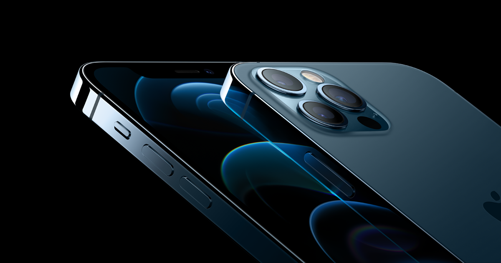
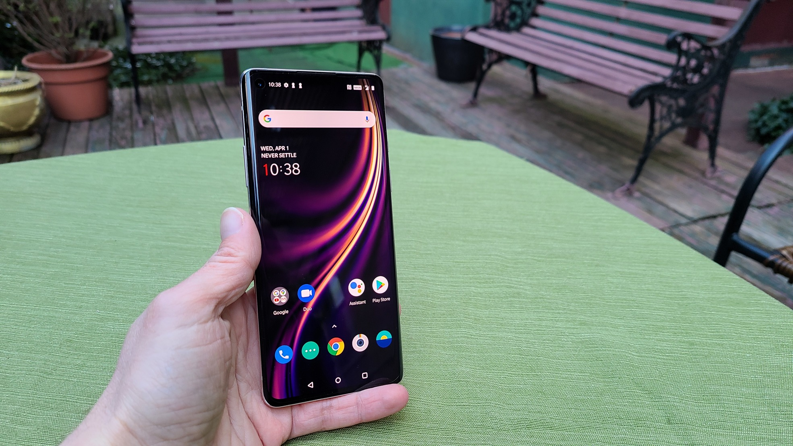

Os três melhores celulares do ano de 2020
Postado em 29/12/2020Iphone 12 Pro Max
Impossível uma lista de melhores celulares de 2020 sem o último lançamento da Apple. O destaque vai para o iPhone 12 Pro Max por ser o mais poderoso da linha, mas esse lugar também é do iPhone 12 Pro e do iPhone 12.
Alimentado pelo poderoso processador A14 Bionic, o smartphone possui duas câmeras traseiras, 5G, até 512 GB de armazenamento, tela OLED de 6,7 polegadas e compatibilidade com o carregador por indução MagSafe. Dá até para perdoar a ausência do adaptador de tomadas na caixa (ou não).
No Brasil, o iPhone 12 Pro Max custa a partir de R$ 10.999, mas o modelo iPhone 12 Mini mais básico pode ser comprado a R$ 6.999.
Samsung Galaxy S20 Ultra

“Avião sem asa, fogueira sem brasa, sou eu assim sem você”, já diriam os poetas Claudinho e Bochecha. O mesmo vale no mercado de smartphones: não pode ter Apple sem Samsung. As metades da laranja entre iOS e Android. Aqui, o Galaxy S20 Ultra chega representando a linha completa.
Tela AMOLED dinâmico de 6,9 polegadas, com taxa de atualização de 120Hz. Processador Exynos 990 com até 16 GB de RAM e 512 GB de armazenamento. Uma câmera frontal de 40 MP e quatro traseiras, com Câmera Traseira: 108 MP, 48 MP, 12 MP e sensor ToF, além de zoom ótico de 10x. E bateria de 5.000 mAh. É, sem dúvidas, um dos melhores celulares de 2020.
O Galaxy S20 Ultra pode chegar a R$ 8.499, mas também é uma boa pedida o recém-lançado Galaxy S20 Fan Edition, com uma configuração mais modesta e preços a partir de R$ 4.499.
OnePlus 8
Lançados em abril, o OnePlus 8 e OnePlus 8 Pro são equipados com processador Snapdragon 865 e modem X55, ou seja, contam com conectividade 5G. Ainda assim, estão entre os melhores celulares de 2020.
Ambos tem versões com 8 ou 12 GB de RAM, mas a memória do OnePlus 8 é LPDDR4X enquanto a do OnePlus 8 Pro é LPDDR5. A bateria do modelo 8 é de 4.300 mAh, e a do 8 Pro é de 4.510 mAh.
O OnePlus 8 custa de US$ 699 (cerca de R$ 3.626) com 8 GB de RAM e 128 GB de capacidade até US$ 799 (R$ 4.145) na versão com 12 GB de RAM e 256 GB. A versão 8 Pro custa de US$ 899 (R$ 4.664) com 8 GB de RAM e 128 GB de capacidade, ou US$ 999 (R$ 5.183) com 12 GB e 256 GB.
Postagens recentes
20 melhores celulares para comprar em 2020
O mercado brasileiro de smartphones está repleto de opções capazes de agradar consumidores de todos os gostos e estilos. Celulares de entrada com boas especificações, smartphones intermediários repletos de recursos e claro, celulares topo de linha com o que existe de melhor atualmente em tecnologia para dispositivos móveis. São tantas opções e recursos que a escolha de qual modelo comprar fica mais difícil a cada ano. Principalmente entre os celulares intermediários e premium
Leia maisDesenvolvido por: Lucas Casarotti